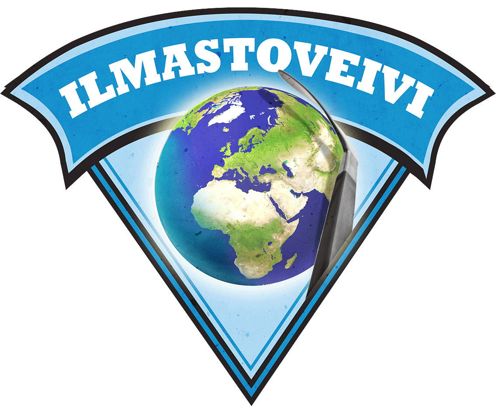

Tässä on sloganin paikka, mikset jo laukaise?!

Alaotsikko ohjaa kohti leipätekstiä kuin kurkiaura konsanaan
Mieleni minun tekevi, aivoni ajattelevi lähteäni laulamahan, saa'ani sanelemahan, sukuvirttä suoltamahan, lajivirttä laulamahan. Sanat suussani sulavat, puhe'et putoelevat, kielelleni kerkiävät, hampahilleni hajoovat.
Veli kulta, veikkoseni, kaunis kasvinkumppalini! Lähe nyt kanssa laulamahan, saa kera sanelemahan yhtehen yhyttyämme, kahta'alta käytyämme! Harvoin yhtehen yhymme, saamme toinen toisihimme näillä raukoilla rajoilla, poloisilla Pohjan mailla.
Lyökämme käsi kätehen, sormet sormien lomahan, lauloaksemme hyviä, parahia pannaksemme, kuulla noien kultaisien, tietä mielitehtoisien, nuorisossa nousevassa, kansassa kasuavassa: noita saamia sanoja, virsiä virittämiä vyöltä vanhan Väinämöisen, alta ahjon Ilmarisen, päästä kalvan Kaukomielen, Joukahaisen jousen tiestä, Pohjan peltojen periltä, Kalevalan kankahilta.